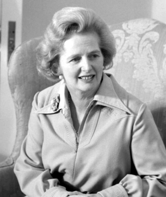
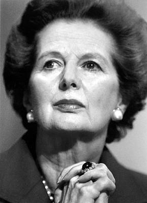
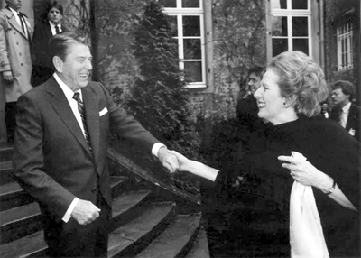
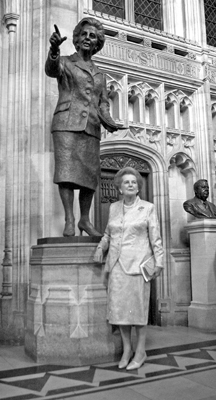

“Nefesini tutup, medyanın tabiriyle,
U dönüşü yapmamı bekleyenlere tek bir sözüm var:
İsterseniz siz dönün, Lady dönmeyecek.”
Thatcher
(Ekonomi politikalarını eleştirenlere karşılık olarak)
İki dünya savaşı arasındaki dingin döneme rastlamıştı doğumu. Tezgâhtar anne ile manav babanın kızı olarak büyüyen Margaret Hilda Roberts, fazlasıyla çalışkan bir kızdı. Dönemin İngilteresi’nde çalışkan olmayanın ayakta durması da kolay değildi hani. Ebeveynlerinin de etkisiyle, inançlı bir Metodist Hıristiyan olarak büyüdü. Burslu okudu. Dünyanın önde gelen üniversitelerinden Oxford’a girmeyi başardı. Üniversitenin Muhafazakârlar Derneği Başkanı seçildiğinde, siyasi çizgisini de belli ediyordu.
Kimya ve hukuk dallarından dereceyle mezun oldu. Politikaya olan düşkünlüğü 1950 ve 1951 seçimlerine Muhafazakâr Parti’nin en genç adayı olarak katılması ve henüz 35 yaşındayken parlamentoya girmesiyle sonuçlanacaktı. Bu arada seçim çalışmaları esnasında tanıştığı Sir Denis Thatcher ile evlendi. Zengin bir işadamı olan Denis, mali gücüyle her zaman eşinin yanında olacaktı.
Muhafazakâr Parti 1970 seçimlerini kazanınca, Thatcher, Başbakan Edward Heath’in kabinesinde Eğitim ve Bilim Bakanı oldu. Hızlı düşünüyor, makineli tüfek gibi konuşuyordu. Kırk dört yaşında Eğitim Bakanı olarak kabineye girdiğinde, herkes onun politik kariyerinin zirvesine ulaştığını düşünüyordu; ama yanıldıklarını göreceklerdi. Hem de ne yanılma!

Sadece İngiltere’yi değil, tüm dünyayı etkileyen Margaret Thatcher
Şans en önemli danışmanı oldu
Margaret çok şanslıydı. Belki de hayat hikâyesi, şansın tarihte ne kadar belirleyici olabileceği açısından ders olarak bile okutulabilirdi. Muhafazakâr Parti liderliği için 1975’te Heath’in karşısına çıktı. Zira sağ kanadın adayı son anda vazgeçince bu görev Margaret’in sırtına yüklenmişti. Kendisine hiç şans tanınmıyordu. Bu kararını bildirmek için Heath’in ofisine girdiğinde, adam hiç kafasını kaldırmaya bile tenezzül etmeden konuştu: “Kaybedeceksin... İyi günler.”
Ama ünlü Fransız yazar Victor Hugo’nun da dediği gibi, “Hiçbir şey, zamanı gelmiş bir fakir kadar güçlü olamaz!”dı. Yetmişlerin ortalarına gelindiğinde Heath’den ve onun Ratchet Etkisi’yle1 sonuçlanan devletçi politikalarından birçok muhafazakâr partiliye gına gelmişti. Ve ilk turda Heath’ten fazla oy alıp herkesi şaşırtan Thatcher, ikinci turda da gerekli oy çoğunluğunu sağlayarak başkan oldu. 1979’daki seçimlerde ise İngiltere’nin ilk ve şu ana kadarki son kadın Başbakanı olacaktı.
Sendikaları tuş edince rüştünü ispat etti
Margaret meselelere dikkatle yaklaşıyordu. Dikkatli ama kararlıydı. Başbakan olarak kariyerinin ilk döneminde çarpışa çarpışa savunduğu konular, zamanla onu sarsılmaz bir lidere dönüştürecekti. Başarısının sırrı netti: Serbest piyasa, dirençli tartışma kabiliyeti ve sadık müttefikler...
Siyasi çatışmaya girdiği ilk cephe, İngiltere’nin artık kontrolden çıkmış ve peş peşe gelen üç hükümeti perişan etmiş olan işçi sendikalarına karşı verdiği mücadeleydi. Thatcher, ulusun sendikalara diş bilemesinden ortaya çıkan enerjiyi akılcı bir parlamento çoğunluğuna dönüştürmeyi başardı ve birbiri ardına yaptığı ve sendikaların ayrıcalıklarını sona erdiren düzenlemelerle İngiltere’deki işçi sendikaları sorununu bir kerede ve daimi olarak çözmeye muvaffak oldu. Bu arada, akılcı bir manevrayla, önceden kömür stoklayarak elektrik kesintilerinin önüne geçmiş, bu şekilde madencilerin grevlerinin etkisini azaltmış ve aynı zamanda grev yapanların yapmayanlara baskıda bulunduğunu gösteren fotoğrafları kamuoyuna sızdırarak, halkın da grevcilere karşı tavır almasını sağlamıştı! Zekiydi, hem de çok!
Sendikalara karşı mücadelede sıklıkla kullandığı “İngiltere’yi kim yönetiyor?” şeklindeki beylik cümlesi, o dönemde çok moda olacaktı. 1980’lere gelindiğinde sorunun cevabı gayet netti: İngiltere’yi Thatcher yönetiyordu.
Özelleştirme silahının tetiğini o çekti
Thatcher sendikaları dize getirir getirmez, dökülen ekonominin her alanında reform yapılması gerektiğini gördü. Ülkede alarm zilleri çalıyordu. Avrupa’nın geri kalanının sosyalizm ve devlet mülkiyeti gibi kavramlarla meşgul olduğu bir dönemde Thatcher, o zamana kadar kutsal inek muamelesi gören kamu iktisadi teşekküllerini, kâr-zarar bilançolarına bakmadan, özelleştirmeye girişti. Attığı ok hedefi vuracaktı. Hantallığı ve hizmet kalitesinin düşüklüğü ile herkesin utancı haline gelmiş ve ancak nadiren kâr yaptığı gözlenen ülkenin ulusal havayolu şirketi British Airways özelleştirildi ve kısa zamanda dünyanın en iyi ve kârlı şirketlerinden birine dönüştü! Yine, özellikle devlet mülkiyetinde geçirdiği son dönemde bir milyar pounddan fazla zarar eden çelik üretim teşekkülü British Steel de, özelleştikten sonra Avrupa’nın en büyük çelik şirketi olmuştu. Bunları 1940’lardan beri kamu mülkiyetinde olan British Telecom ve diğerlerinin özelleştirilmesi izleyecekti.
Özelleştirme, seksenlerin ortalarında dünya hükümetleri açısından yeni bir kavramdı, ama sonlarına gelindiğinde, neredeyse her kıtadan 50 ülkenin hükümeti, birbiri ardına özelleştirme operasyonlarına girişmişti. Kamu teşekküllerini borsada halka açmış ya da onları doğrudan girişimcilere devrederek, kâr yapan dinamik şirketlere dönüştürmüşlerdi. Hatta özelleştirmeye mesafeli duran sol eğilimli ülkelerdeki hükümetler bile, halkın üzerine yük bindiren iktisadi teşekküllerin sayısını fazla ses çıkarmadan azaltmaya başlamıştı. İngiltere, özelleştirmede bu ülkelere akıl hocalığı yapmaktan da geri kalmıyordu. Hatta bu durum, ünlü iktisat düşünürü Adam Smith’in çığır açan ‘Ulusların Zenginliği’ (The Wealth of Nations) isimli eserini yazması ve J.M. Keynes’in kendi modelini (Keynesianism) ortaya koymasından bu yana, İngiltere’nin pratik ekonomiye yaptığı en büyük katkı olarak görülmeye başlamıştı. Ama Thatcher demek, sadece ‘ekonomi’ demek değildi. Ötesi de vardı. Savaş gibi...

1980’li yıllardaki özelleştirme politikalarının arkasındaki güçlü isim oydu.
Gözünü kırpmadan savaşa girdi
1982’de Arjantin’de askeri cunta iktidardaydı ve her cunta gibi o da ekonomik sıkıntılardan dolayı azalan kamuoyu desteğini geri kazanmak için dikkat dağıtan bir işe girişmeye meyilliydi. Sonunda girişti de; Arjantin’in, 1830’dan beri hak iddia ettiği ve kendi ana karasına çok yakın olan İngiliz sömürgesi Falkland Adaları’nı işgal etti. İkinci Dünya Savaşı’ndan bu yana ilk kez bir İngiliz toprağı işgal ediliyordu!
Cunta, bir bakıma, şok ekonomik tedbirlerin sebep olduğu geçici sıkıntılardan dolayı popülaritesi azalan Thatcher’ın imdadına koşmuştu. Ekonomisiyle başı dertte olan bir taraf, aynı sorundan muzdarip diğer tarafın merhemi oluyordu!
Thatcher, kadınlığını, göze çarpan bir kararlılıkla harmanlayarak İngiltere’yi, Arjantin’e karşı savaşa sokup ezici bir zafer kazanınca, tüm dünya adını ezberledi. Politikacıların askerlere sonuca gitmek için kesin emirler vermesi, ama sonuca gidecek yolların seçimini askerlere bırakması gerektiğini savundu. Yine de savaş esnasında kaybettikleri askerler, gemiler ve uçaklar onu sinirlendirmişti. Askerlerin cevabı ise gayet netti: “Sayın Başbakan, zaten bu kayıpları daha az göstermek için daha fazla uçak ve gemi istiyoruz.”
Kararlılığı, cesareti, sadakati ile dikkat çeken Thatcher, kısa zamanda diğer kadın siyasetçileri de kendisine hayran bırakıp onlar için bir model olacaktı. Onun kendisini ispat etmesiyle, Kıta Avrupası’nda siyasete atılan kadınların sayısında hissedilir bir artış olmuştu. ‘Falkland Fatihi’ 1983 seçimlerini kazanmakta zorlanmayacaktı...

Margaret Thatcher ve Ronald Reagan bir zamanların ayrılmaz ikilisiydi.
Amerika’yı da o yönetiyordu!
Tabii ki kendisine hayran erkek siyasetçiler de vardı. Özellikle de ondan 18 ay sonra iktidara gelmiş olan ABD Başkanı Ronald Reagan. Dünyanın patronu konumunda görülen ABD Başkanı bu İngiliz kadının yolundan gitmekte gecikmeyecekti. Amerika da Ratchet Etkisi’nden muzdaripti. Reagan devletin piyasa işleyişindeki rolünü etkin bir şekilde sınırlayarak (deregülasyon), vergi indirimi ve özel teşebbüse daha geniş pazar imkânları yaratarak gidişatı tersine çevirmeyi başardı.
Reagan, Thatcher’in serbest piyasa ve minimal devletin avantajları hakkındaki sözlerini can kulağıyla dinliyordu. Tabii ki tek konuştukları para değildi. İkisinin de siyasi yaşamlarının zirve noktası olan 80’ler, aynı zamanda bir başka şeyin daha zirvede olduğu bir dönemdi: Soğuk Savaş’ın. İkili aralarındaki bu siyasi etkileşimi bir dış politika ortaklığına çevirmekte gecikmeyecekti. Tabii ki ‘Şeytan İmparatorluğu’ olarak isimlendirdikleri Sovyetlere karşı.
Nasıl ‘Demir Lady’ oldu?
Thatcher kendisiyle özdeşleşen ‘Demir Lady’ lakabını büyük düşmanı Ruslardan almıştı. Sovyetler Birliği’ni yerden yere vurduğu bir konuşmada: “Ruslar dünyaya hâkim olmak istiyor, tarihin tanıdığı en yayılmacı devlet olabilmek için yığınak yapıyorlar. Kamuoyunun ne düşündüğü Kremlin’deki adamların umurunda değil. Onlar için silahlar, tereyağından önce geliyor. Bizim içinse her şey silahlardan önce geliyor” dedi.
Cevap gecikmedi. Rus gazetesi Krasnaya Zvezda (Kızıl Yıldız), Thatcher’a ‘Demir Lady’ (Iron Lady) lakabını taktı. Moskova Radyosu lakabı süratle tüm dünyaya yaydı. İlginçtir, bu lakaptan çok hoşlanan Thatcher, yakıştırmayı zevkle üzerinde taşımaya başladı. Bu arada Thatcher’in ‘tereyağı’ demagojisinin gerçekleri tam olarak yansıtmadığını da hatırlatalım. Zira İngiltere o dönemde silahlanma yarışının önde gelen koşucularından biriydi.
Thatcher: “Sovyetler çöksün de...”
Her ikisi de şahin karakterli olan ve hem siyaseten hem de gramer olarak aynı dili konuşan İngiliz ve Amerikan liderlerinin iktidarları sürecince; reformlara yönelmesi, kendini feshetmesi ya da çökmesi için Sovyetlere kararlı bir baskı uygulanması yönünde hareket etmeleri, şaşmaz bir politika olacaktı. Thatcher, Sovyetleri korkutup müzakere masasına oturtmak için Reagan’ı silahlanmaya daha fazla para harcaması konusunda ikna etmişti. “Ne kadar çabuk dağılırsa, o kadar iyi olur” diyordu Sovyetler için.
Reagan ile birlikte, Sovyet lider Mihail Gorbaçov’u açıklık (glasnost) politikalarını son sınırına kadar hayata geçirmeye zorlayan da Thatcher’di. Ve yine Sovyetler, Afganistan’ı işgal etmiş, sıcak denizlere inmeye çalışırken, Demir Lady’ye bağlı SAS komandoları, Rus işgalcilere karşı savaşan Afgan mücahitleri örgütlüyordu!
Aynı Thatcher, Sovyetlere sadece sopa göstermemiş, zaman zaman havucunu da çıkarmıştı. Reform yanlısı Gorbaçov’un iktidara gelişini olumlu karşılayan ilk Batılı lider olduğu gibi, Gorbaçov iktidarının daha üç ay öncesinden Sovyet lider için ‘birlikte çalışabileceğimiz birisi’ diyerek, sezgilerinin sağlam olduğunu göstermişti.
Tarihçiler muhakkak ki Sovyet rejiminin sonunu getiren aktörlerin rolünü hararetle tartışacaktır, ama yine de Thatcher’in rolünün tartışılmayacak kadar net olduğunu söyleyebiliriz. Zira öyle ya da böyle, istediği olmuş; Sovyetler, onun iktidarı döneminde tarih sahnesinden silinmişti...
Hong Kong’dan Körfez Savaşı’na hep en önde oldu
Başbakanlığı boyunca dış gelişmelere ‘üzerinde güneş batmayan İngiliz İmparatorluğu’ çerçevesinden baktı. Her uluslararası olayda ilk sahne alan Thatcher oluyordu. Sözgelimi 1984’teki Çin ziyaretinde, Deng Şiaoping ile Çin-İngiliz Ortak Deklarasyonu’nu imzalayarak, 1 Haziran 1997’den itibaren yönetimi Çin’e devredilecek olan İngiliz sömürgesi Hong Kong’un elli yıl daha ‘liberal’ ekonomi rejimini devam ettirmesini garanti altına almıştı.
Yine Irak Devlet Başkanı Saddam Hüseyin 1990’da Kuveyt’i işgal edince, Amerikalılardan önce harekete geçen de Demir Lady idi. Dönemin Amerikan Başkanı George Bush’a Saddam Hüseyin’i Kuveyt’ten çıkarmak için Ortadoğu’ya asker göndermesi yönünde baskı yapmış, Bush biraz ağırdan alınca, “Tereddüt edecek vaktimiz yok” diyerek, I. Körfez Savaşı’na giden süreci hızlandırmıştı.
Avrupa Birliği’ni hiç sevmedi!
Thatcher’in en istikrarlı olduğu alanlardan biri de, her ne kadar ülkesi üyelerinden biri olsa da Avrupa Birliği’nin (o dönemdeki adıyla Avrupa Ekonomik Topluluğu- AET) bazı ekonomik ve siyasi politikalarına olan ateşli karşıtlığıydı. Sözgelimi 1979’da İngiltere’nin topluluğa verdiklerinin aldıklarından çok daha fazla olduğunu iddia etmiş ve “Topluluktan veya başka herhangi birinden para istemiyoruz. Sadece kendi paramızı geri istiyoruz!” diyerek, ‘zararlarının’ karşılanmasını istemişti! İlginçtir, 1984’te Thatcher’in bu iddiası kabul edilince, aradaki farkın yüzde 66’sı, halen yürürlükte olan bir anlaşmayla, yıllık taksitler halinde İngiltere’ye geri ödenmeye başlandı. Söz konusu anlaşma Avrupa Birliği üyelerini öfkelendirmeye halen devam etse de Margaret istediğini almıştı!
Thatcher, AET’nin ekonomik birliği aşarak siyasi birliğe dönüşme isteğine de karşıydı. 1988’de Belçika’da yaptığı bir konuşmada, topluluğun federal bir yapıya dönüşmesine ve kararların tek bir merkezden (Brüksel) alınmak istenmesine karşı çıkmış; Topluluğun rolünün, serbest pazar ve etkin rekabet koşullarını sağlamakla sınırlı olması gerektiğini söylemişti. Kendisi İngiltere’de devleti küçültmeye çalışırken, Avrupa’nın kocaman tek bir devlete dönüştürülmesine kızıyordu. Bu kızgınlığını, “İngiltere’de devletin sınırlarını, bu sınırların Avrupa düzeyinde tekrar genişlemesini ve bir Avrupa üst-devletinin Brüksel’de yeniden hâkimiyet kurmasını izlemek için daraltmadık” sözleriyle dile getirecekti.
Topluluğun para politikaları da onu öfkelendiriyordu. Para birliğine ve tek bir para biriminin (bugünkü Euro) tüm birlik ülkelerinin para birimlerinin yerine geçmesine özellikle karşıydı. Onun bu yaklaşımı ardından gelenlerce de benimsendiği için bugün İngiltere, AB üyesi olduğu halde Euro’yu değil, kendi para birimi olan Sterlin’i kullanmaya devam ediyor.
Thatcher, siyaseti bıraktıktan sonra da muhalefetini devam ettirecek ve AB’nin siyasallaşmasında önemli rol oynayan Maastricht Antlaşması’nı ‘çizmeyi aşan bir antlaşma’ olarak niteleyecekti. İlerleyen zamanla birlikte AB karşıtlığı daha da arttı ve 2002’de yayımlanan ‘Devlet Sanatı’ (Statecraft) isimli kitabında, İngiltere’nin milli egemenliğini koruması için üyelik koşullarının gözden geçirilmesini, bunun başarısız olması halinde, birlikten ayrılarak NAFTA’ya (Kuzey Amerika Serbest Ticaret Antlaşması) katılmayı önerdi...

Kendi adına yapılan heykelin önünde
Seçim kaybetmediği halde koltuğunu bıraktı!
Her şeyin bir sonu vardı ve bu kural, Thatcher’in siyasi kariyeri için de geçerliydi. Ama bu parlak kariyerin bitişi, dış etkenlerden değil, bizzat kendisinden kaynaklandı. Seçim mi kaybetmişti? Hayır, aksine üç kez peş peşe kazandığı seçimlerle Muhafazakâr Parti’ye tarihinin en parlak günlerini yaşatmıştı. Alışık olduğumuz siyasi iklim gereği bizi şaşırtacaktır muhtemelen ama Thatcher, namağlup bir Başbakan olduğu halde parti içi demokrasiyle (İngiliz yorumcular bunu parti içi darbe olarak da isimlendirir) devrilmişti!
Vergi politikası, kamuoyunun ekonomik gidişat konusundaki karamsarlığı, yüksek faiz oranları, iş çevrelerinin desteğinin azalması ve Thatcher’in Avrupa’nın birleşmesine dönük müzmin muhalefetinin parti içinde yarattığı çalkantı, 1990’a gelindiğinde Muhafazakâr Parti’yi oldukça yıpratmıştı. Bir de buna kabinedeki en sağlam müttefiklerinden Sir Geoffrey Howe’un, Thatcher’in Avrupa siyasetini protesto etmek için Başbakan Yardımcılığından istifa etmesi eklenince, Demir Lady için perde kapanmaya başladı. Parti liderliği için yapılan oylamada rakibinden az oy alınca, hemen istifasını verdi. On bir yıllık Thatcher dönemi kapanmıştı. İstifa gerekçesini ifade ettiği mesajda başarısının ipuçlarını veriyordu:
“Partinin birliği ve gelecek seçimlerde başarı sağlaması için, yarıştan çekilip diğer hükümet üyelerine lider adayı olma imkânı vermemin daha uygun olacağına karar verdim. Gerek hükümetten gerekse hükümet dışından bana böylesine fedakârca destek veren herkese teşekkür ederim.”
NOTLAR